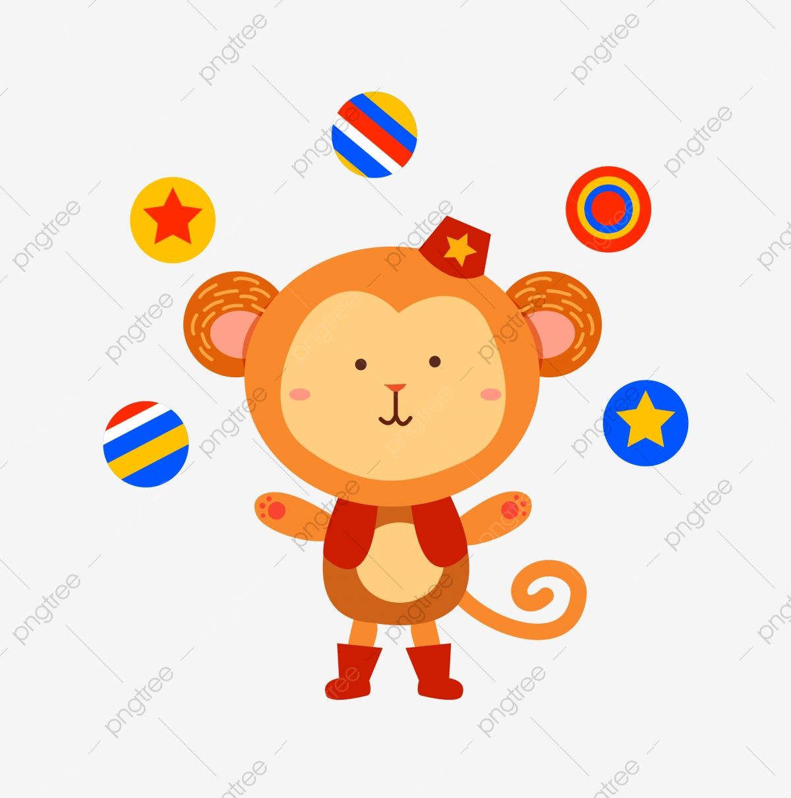
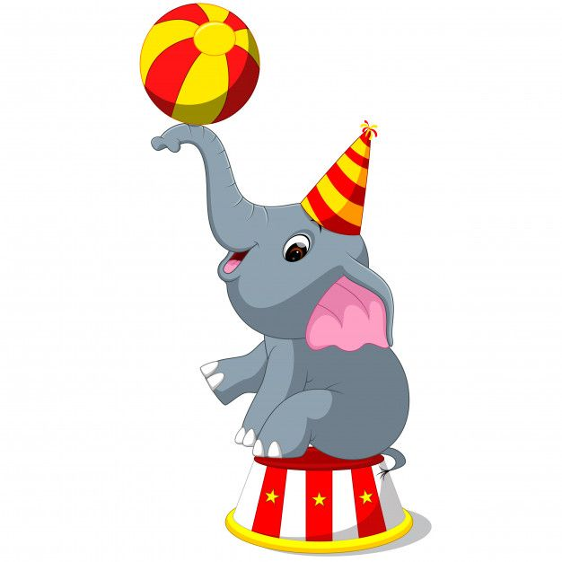

Hemos realizado alrededor de 500 shows en lo que va del año 2021, en distintos municipios y departamentos de Guatemala como lo son Petén, Chiquimula y San Marcos.
En estos shows hemos contado con risas, emociones e incluso propuestas de matrimonio
En el último acto realizado en Petén uno de nuestros monos logro saltar de lo alto del circo y hacer malabares con pelotas mientras bajaba en triciclo y a la vez pronunciaba las palabras hola y adiós en mandarin y árabe.
 